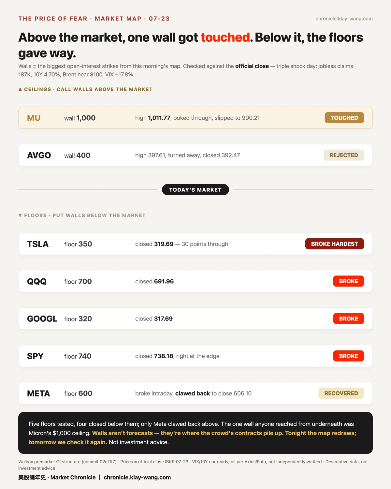
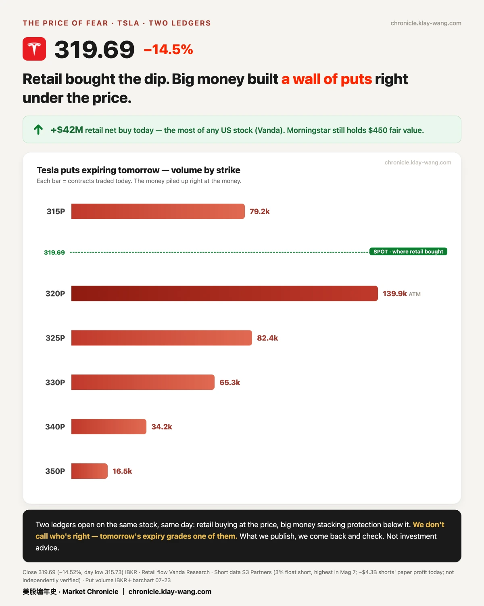
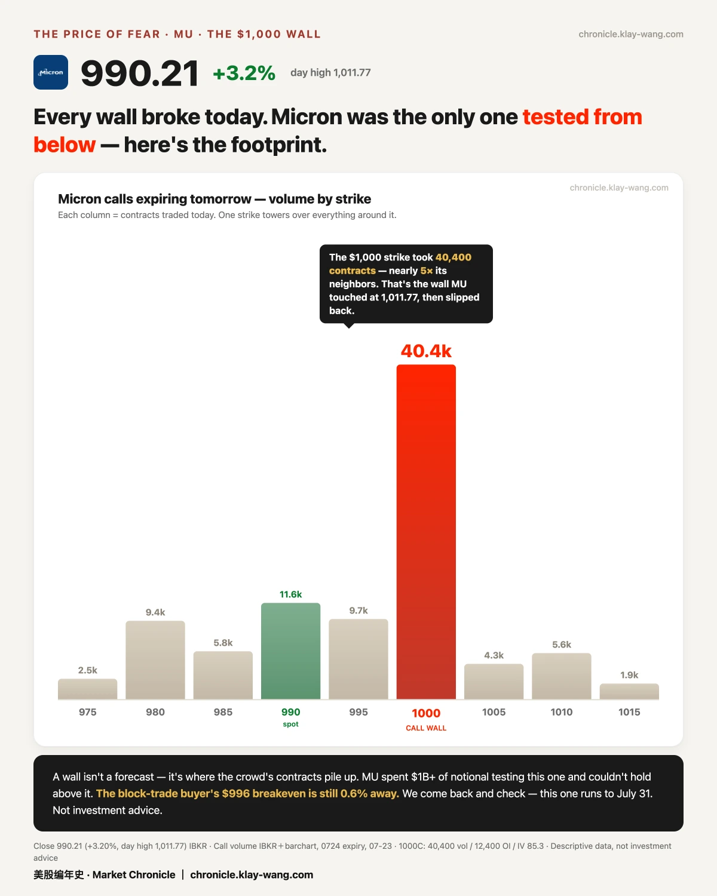
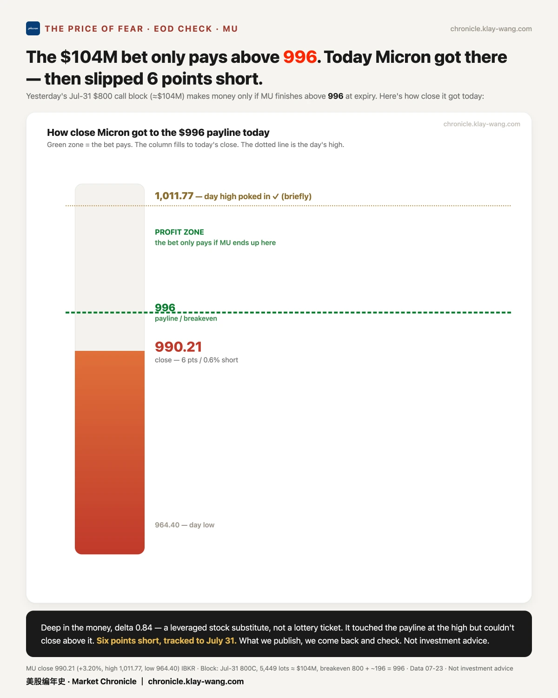
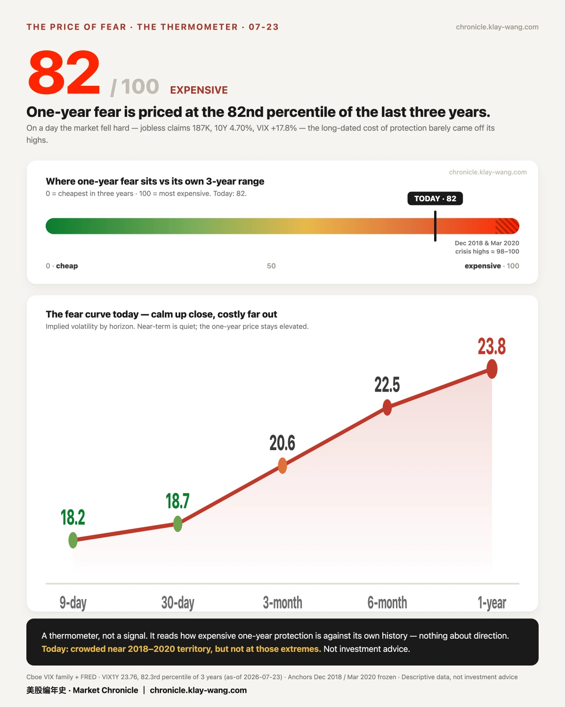

昨天市场挨了三记重拳，却在收盘前自己爬了起来 · 07-24 · 7.20-7.24
• 一天挨三下：经济数据、财报、油价一起砸下来，标普一度跌得挺凶，收盘 −1.2%，但把跌幅拉回了一半
• 关键价位全破了：好几只大票跌穿了大家盯着的支撑位，唯独美光反过来往上冲，差点摸到一笔一亿美元大单的赚钱线
• 昨天的判断，今早对答案：英伟达那笔 3 亿美元的巨单，不是新下注，是把旧仓换了个到期月份
📋 先说昨天押的判断，今早揭晓了
一句话：我们看到大单先记下来，第二天用真实持仓对答案。发过的，就回来对。
昨天英伟达盘中冒出两笔超大买单，一分钟内相邻打出，每笔都是 8 万张级别，当时看着像有人重仓押它涨。我们没急着下结论，说好等隔夜的真实持仓数据。
今早数据出来了：其实是同一个人，把 9 月的仓位挪到了 10 月：旧的平掉 7.8 万张，新的建起 8.8 万张，一进一出、尺寸正好对得上。说白了就是换了个到期时间，不是什么新决断。规模大概 3 亿美元。

🧱 三记重拳：支撑全破了，但跌被接住了
一句话：好几道"地板"被踩穿，只有美光那道"天花板"被人从下面顶了一下。
昨天市场同一天挨了三下：一是失业金申请的人比预期少很多，说明经济还热，反而把利率顶了上去（10 年期到 4.70%，对股票不友好）；二是谷歌、特斯拉财报后继续被消化；三是中东局势升温、油价蹦到 100 美元。恐慌指数一天涨了 近 18%。
我们每天早上会画一张"墙图"：把每只股票上大家堆钱最多的那个价位标出来，像一道墙。昨天下方五道支撑墙，标普、纳指、特斯拉、谷歌、Meta，收盘全被跌穿了。
但有一件"没发生"的事值得记：下午那场债券拍卖之后，跌得最狠的几只反而都没再创当天新低，标普收在了全天的中间位置。跌，被接住了。

!⚖️ 特斯拉：同一天，散户在抄底，大钱在买保险
一句话：一只股票上摊着两本相反的账。
特斯拉昨天跌了 14.5%，是七大科技股里今年最惨的一只，做空它的人一天就浮盈几十亿。
可就在同一天，特斯拉是全美散户净买入最多的股票，买了约 4200 万美元，有分析师还坚持给它 450 美元的目标价。而另一边，大机构花了约 3 亿美元买"保险"（押它继续往下）。
散户在捡便宜，大钱在防风险，两拨人同一天押完全相反的方向。我们不站队、不猜谁对，只把两本账都记下来，等到期那天见分晓。

💰 美光：那笔一亿美元，差 6 块钱没够着
一句话：全场唯一被从下面顶上去的"天花板"，摸到了，又滑了下来。
前天收盘前，有人花 1 亿美元买了美光的看涨期权，这笔单要美光涨到 996 以上才开始赚钱。昨天美光最高冲到 1011，两次越过这条线，可收盘又滑回 990，差 6 块钱、0.6% 没站稳。
这个买家的钱，压在 1000 这个整数关口上。昨天光这一个价位就成交了 4 万张，是旁边价位的近 5 倍：这就是那道天花板被顶上去的完整脚印。差一点点，我们继续跟到月底。



🌡 温度计：82 / 100
我们有个"恐惧温度计"，量的是买一份一年期的"保险"现在贵不贵。昨天读数 82（满分 100），意思是这个价格在过去三年里排到了前列，很贵。

最有意思的是：昨天市场大跌，短期的恐慌很快就消了，可这份长期的贵，纹丝不动。风波过去了，但为长远买的那份安心，一分没便宜。
本站不提供投资建议，不预测方向，不做择时。